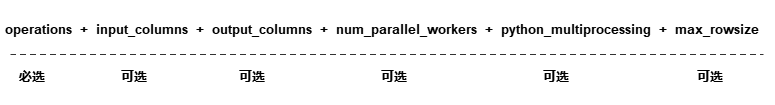

mindspore.dataset.Dataset.map¶
-
mindspore.dataset.Dataset.map(operations, input_columns=None, output_columns=None, column_order=None, num_parallel_workers=None, **kwargs)[源代码]¶ 给定一组数据增强列表，按顺序将数据增强作用在数据集对象上。
每个数据增强操作将数据集对象中的一个或多个数据列作为输入，将数据增强的结果输出为一个或多个数据列。 第一个数据增强操作将 input_columns 中指定的列作为输入。 如果数据增强列表中存在多个数据增强操作，则上一个数据增强的输出列将作为下一个数据增强的输入列。
最后一个数据增强的输出列的列名由 output_columns 指定，如果没有指定 output_columns ，输出列名与 input_columns 一致。
如果使用的是 mindspore dataset 提供的数据增强（ vision类 ， nlp类 ， audio类 ），请使用如下参数：
如果使用的是自定义PyFunc数据增强，请使用如下参数：

- 参数：
operations (Union[list[TensorOperation], list[functions]]) - 一组数据增强操作，支持数据集增强操作或者用户自定义的Python Callable对象。map操作将按顺序将一组数据增强作用在数据集对象上。
input_columns (Union[str, list[str]], 可选) - 第一个数据增强操作的输入数据列。此列表的长度必须与 operations 列表中第一个数据增强的预期输入列数相匹配。默认值：None。表示所有数据列都将传递给第一个数据增强操作。
output_columns (Union[str, list[str]], 可选) - 最后一个数据增强操作的输出数据列。如果 input_columns 长度不等于 output_columns 长度，则必须指定此参数。列表的长度必须必须与最后一个数据增强的输出列数相匹配。默认值：None，输出列将与输入列具有相同的名称。
num_parallel_workers (int, 可选) - 指定map操作的多进程/多线程并发数，加快处理速度。默认值：None，将使用 set_num_parallel_workers 设置的并发数。
**kwargs - 其他参数。
python_multiprocessing (bool, 可选) - 启用Python多进程模式加速map操作。当传入的 operations 计算量很大时，开启此选项可能会有较好效果。默认值：False。
max_rowsize (int, 可选) - 指定在多进程之间复制数据时，共享内存分配的最大空间，仅当 python_multiprocessing 为True时，该选项有效。默认值：16，单位为MB。
cache (DatasetCache, 可选) - 单节点数据缓存服务，用于加快数据集处理，详情请阅读 单节点数据缓存 。默认值：None，不使用缓存。
callbacks (DSCallback, list[DSCallback], 可选) - 要调用的Dataset回调函数列表。默认值：None。
offload (bool, 可选) - 是否进行异构硬件加速，详情请阅读 数据准备异构加速 。默认值：None。
说明
operations 参数接收 TensorOperation 类型的数据处理操作，以及用户定义的Python函数(PyFuncs)。
不要将 mindspore.nn 和 mindspore.ops 或其他的网络计算算子添加到 operations 中。
- 返回：
MapDataset，map操作后的数据集。
样例：
>>> # dataset is an instance of Dataset which has 2 columns, "image" and "label". >>> # image is of type bytes type which can be decoded to RGB >>> # label is of type int32 >>> >>> # Define two operations, where each operation accepts 1 input column and outputs 1 column. >>> decode_op = c_vision.Decode(rgb=True) >>> random_jitter_op = c_vision.RandomColorAdjust(brightness=(0.8, 0.8), contrast=(1, 1), ... saturation=(1, 1), hue=(0, 0)) >>> >>> # 1) Simple map example. >>> >>> # Apply decode_op on column "image". >>> dataset = dataset.map(operations=[decode_op], input_columns=["image"]) >>> >>> # Decode and rename column "image" to "decoded_image". >>> dataset = dataset.map(operations=[decode_op], input_columns=["image"], output_columns=["decoded_image"]) >>> >>> # A simple example for user defined python function transform. >>> dataset = ds.NumpySlicesDataset(data=[[0, 1, 2]], column_names=["data"]) >>> dataset = dataset.map(operations=[(lambda x: x - 1)], input_columns=["data"]) >>> >>> # 2) Map example with more than one operation. >>> >>> # Create a dataset where the images are decoded, then randomly color jittered. >>> # decode_op takes column "image" as input and outputs one column. The column >>> # outputted by decode_op is passed as input to random_jitter_op. >>> # random_jitter_op will output one column. Column "image" will be replaced by >>> # the column outputted by random_jitter_op (the very last operation). All other >>> # columns are unchanged. >>> dataset = dataset.map(operations=[decode_op, random_jitter_op], input_columns=["image"]) >>> >>> # Rename the column outputted by random_jitter_op to "image_mapped". >>> dataset = dataset.map(operations=[decode_op, random_jitter_op], input_columns=["image"], ... output_columns=["image_mapped"]) >>> >>> # Map with multiple operations using pyfunc and rename column's name >>> dataset = ds.NumpySlicesDataset(data=[[0, 1, 2]], column_names=["data"]) >>> dataset = dataset.map(operations=[(lambda x: x * x), (lambda x: x - 1)], input_columns=["data"], ... output_columns=["data_mapped"]) >>> >>> # 3) Example where number of input columns is not equal to number of output columns. >>> >>> # operations[0] is a lambda that takes 2 columns as input and outputs 3 columns. >>> # operations[1] is a lambda that takes 3 columns as input and outputs 1 column. >>> # operations[2] is a lambda that takes 1 column as input and outputs 4 columns. >>> # >>> # Note: The number of output columns of operation[i] must equal the number of >>> # input columns of operation[i+1]. Otherwise, this map call will also result >>> # in an error. >>> operations = [(lambda x, y: (x, x + y, x + y + 1)), ... (lambda x, y, z: x * y * z), ... (lambda x: (x % 2, x % 3, x % 5, x % 7))] >>> dataset = ds.NumpySlicesDataset(data=([[0, 1, 2]], [[3, 4, 5]]), column_names=["x", "y"]) >>> dataset = dataset.map(operations, input_columns=["x", "y"], ... output_columns=["mod2", "mod3", "mod5", "mod7"])